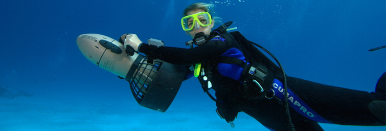
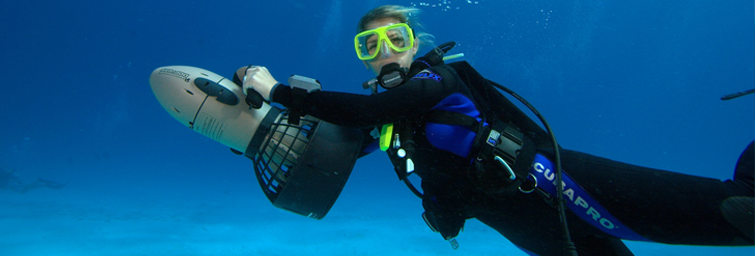

Dive Catalina is the friendliest dive shop on Catalina Island. We treat you the way we like to be treated when we travel. Catalina is surrounded by some of the most beautiful waters in the world. Divers travel from all over the world to dive in kelp forests teeming with life. Here at Dive Catalina, we offer a full range of experiences that allow divers and non-divers to experience Southern California’s underwater realm. For non-divers, we have introductory dives that give everyone in good health a chance to do a real dive. No experience necessary.
For certified divers, we offer a full range of activities that include tours, classes, boat dives, and full rental packages. Our instructors are the most experienced on the island. They love what they do and it shows. We all strive to make your diving experience exceptional. Browse through our website , enjoy the images, and contact us to arrange your dive experience. Remember, “Work Less… Dive More.”